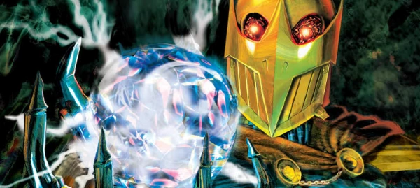

Deadlock is a main character in The A.B.C. Warriors, but crossed over into Nemesis the Warlock in a strong way, leading to the duo banner tales of Nemesis and Deadlock, as well as his own series set on Termight. He is an occult wizard of the Order of the Knights Martial, and a robot, and sometimes a demonic personification of the power of Khaos.
Art by John Charles
| Story Title | Parts | Pages | w indicates a wraparound coverCovers | Year(s) | Issues | Writer | Artist | Colourist | Letterer |
|---|---|---|---|---|---|---|---|---|---|
From Nemesis and DeadlockWarlocks & Wizards | 1 | 6 | 0 | 1990 | 700 | Pat Mills | Carl Critchlow | <-- | Gordon Robson |
From Nemesis and DeadlockThe Enigmass Variations | 7 | 42 | 726: Carl Critchlow 728: Carl Critchlow 2 | 1991 | 723-729 | Pat Mills | Carl Critchlow | <-- | Steve Potter |
Linked to Nemesis the WarlockDeadlock | 11 | 65 | 1214: Siku 1218: John Charles 2 | 2000 | Reprints: M284 (supplement)1212-1222 | Pat Mills | Henry Flint | [greyscale] | Tom Frame |
| >> Posters / Teasers << | |||||||||
Linked to The A.B.C. WarriorsDeadlock - The mystic A.B.C. Warrior | 1 | 1 | 0 | 1980 | 2KA'81 | n/a | Kevin O'Neill | <-- | n/a |
Linked to The A.B.C. WarriorsDeadlock - Disciple of Khaos | 1 | 1 | 0 | 1988 | 563 | n/a | Simon Bisley | <-- | n/a |
Linked to The A.B.C. Warriors Star Scan.Deadlock | 1 | 1 | 0 | 1995 | 957 | n/a | Carl Critchlow | <-- | n/a |
Linked to Nemesis the Warlock Used as cover of 1218.Master of Magickal Mayhem! | 1 | 1 | 0 | 2000 | 1210 | editorial | John Charles | <-- | n/a |
From The The A.B.C. Warriors Star Scan.Deadlock | 1 | 1 | 0 | 2011 | 1722 | n/a | Liam McCormack-Sharp | <-- | n/a |
| >> Features << | |||||||||
From The The A.B.C. WarriorsFact File: Deadlock | 1 | 1 | 0 | 1985 | 400 | Pat Mills | Reprint. Kevin O'Neill | [b&w] | Reprint. Peter Knight |
| Intro: Deadlock | 1 | 1 | 0 | 2000 | 1212 | editorial | Siku | <-- | n/a |
| year | episodes | pages |
| 1985 | 0 | 0 |
| 1986 | 0 | 0 |
| 1987 | 0 | 0 |
| 1988 | 0 | 0 |
| 1989 | 0 | 0 |
| 1990 | 1 | 6 |
| 1991 | 7 | 42 |
| 1992 | 0 | 0 |
| 1993 | 0 | 0 |
| 1994 | 0 | 0 |
| 1995 | 0 | 0 |
| 1996 | 0 | 0 |
| 1997 | 0 | 0 |
| 1998 | 0 | 0 |
| 1999 | 0 | 0 |
| 2000 | 11 | 65 |
| 2001 | 0 | 0 |
| 2002 | 0 | 0 |
| 2003 | 0 | 0 |
| 2004 | 0 | 0 |
| 2005 | 0 | 0 |
Comic strip data (excludes other content):